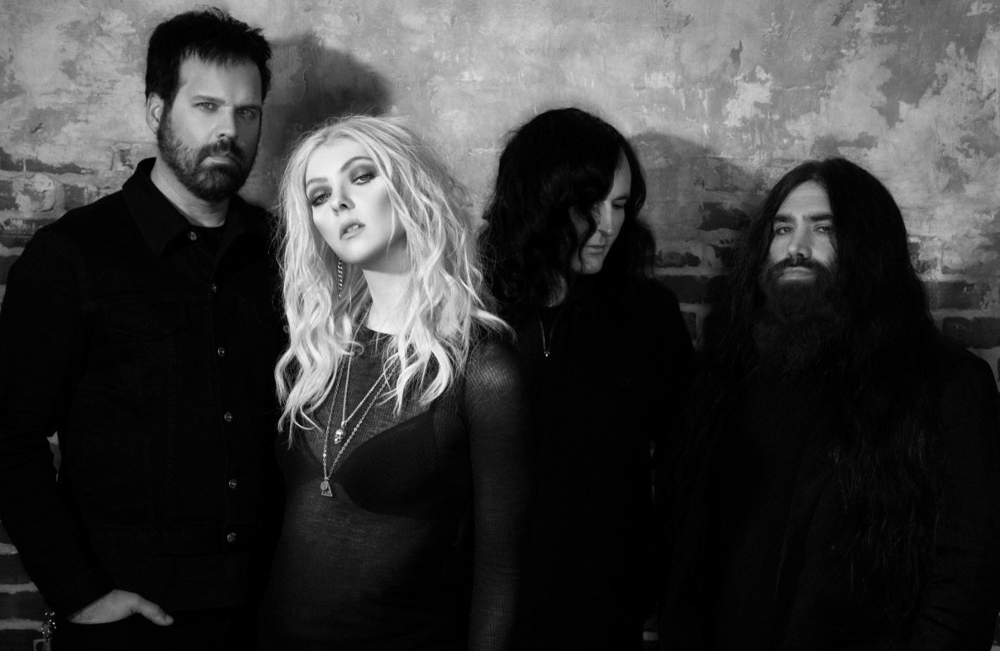

Nuevo Álbum #Death by Rock And Roll Ya Disponible
Fundada en Ciudad de Nueva York en 2008, The Pretty Reckless y su ya fallecido productor Kato Khandwala inicialmente levantaron las olas con su gran debut de 2010, Light Me Up. Después de incontables shows, la banda volvió con Going To Hell en 2014. No solo el álbum fue parte del Top 5 del Top 200 de Billboard, también ganaron tres premios siendo #1 certificado-de-oro “Heaven Knows” (la mayor canción de rock de 2014), “Fucked Up World,” y “Follow Me Down”. Premios que no fueron adquiridos por un grupo liderado por una mujer desde 1984 por The Pretenders. Mientras tanto, su tercer disco, Who You Selling For, volvió al puesto #1 en Mainstream Rock Songs Chart con “Take Me Down”, que los marcó como “La primera banda que llegó al puesto #1 con sus primeros 4 singles”, según Billboard. Y llegando ahora a ser la primera banda que llegó al puesto #1 con sus primeros 5 singles con ‘‘Death by Rock And Roll’’. Elogios vinieron desde Vogue, Nylon y más, que lograron que el cuarteto llegue shows televisivos como Letterman y Conan. Con más de un billón y medio de streams, encabezaron incontables shows e hicieron gira con Guns N' Roses y muchos otros grandes artistas.
